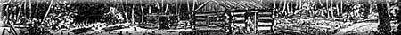

Cannington Manor
Dalesboro PO
French Settlement
Government House
Experimental Farm
Lest We Forget
Homestead
M.A. Anderson
Ranger Station
Sask Herald
Telegraph Flat

|
Cannington Manor - All Saints Church
The faith, endurance and neighborliness of these splendid men of all faiths, their wives, sons and daughters, laid the true foundation of the west.
The Dalesboro Post Office was among the first postal operations established in the North West Territories.
Although their attempts to recreate old world society failed, and they returned to France before World War I, they left a romantic tradition.
Seat of the Territorial Government On the projected rail and telegraph lines in February 1876, Battleford was chosen as the new capital of the North-West Territories.
This land, selected in 1887, became the first experimental farm in the North-West Territories. On rich, but dry, open prairie, Indian Head developed and propagated vital dryland cultivation techniques, tested crop varieties and distributed seeds and seedlings to western farmers.
|
|
|
|
Lest We Forget
Between October 28, 1940 and December 15, 1944, the school-trained 2,539 air bomber and 3,702 air gunner students.
William Richard Motherwell was the first President of the Territorial Grain Growers Association, Saskatchewan's first Minister of Agriculture, and served as Federal Agriculture Minister.
Matt Anderson of Bulyea was a driving force in the evolution of Saskatchewan Health Care.
This is the site of the original Greenwater ranger station established in 1914 under the federal Forestry branch.
The Saskatchewan Herald was founded on this site in 1878 by Patrick G. Laurie. It was the first newspaper in the Territories.
Telegraph Flat was named in 1876 when the Dominion Telegraph Company opened its western terminus office here.
|